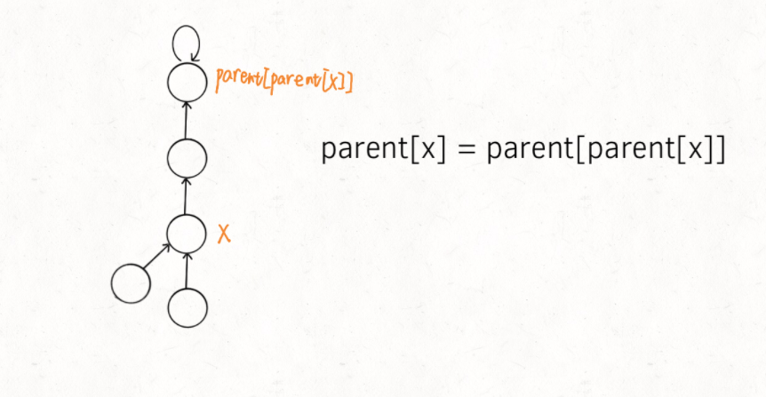

1、已排序的数组中进行搜索或查找的问题，首先想到 二分法 解决。
2、位运算归纳:
x & 1 : 如果x为2的倍数, 等价于取余,即 x % 2
x ^ y ^ y = x。用异或实现a, b 两个数交换:
a = a ^ b;
b = a ^ b;
a = a ^ b;
x & (x - 1) : 每执行一次x = x&(x-1)，会将x用二进制表示时的最右边的一个1变为0，因为x-1将会将该位(x用二进制表示时最右边的一个1)变为0。
x & (-x) : 得到x的二进制表示中的最右边的那个1。即最后一位 1 保留，其它位全部变为 0
如 n = 11110100 , 取负：-n = 00001100 , 则 n & (-n) = 00000100
3、回溯算法框架:
result = []
def backtrack(路径, 选择列表):
if 满足结束条件:
result.add(路径)
return
if(中间再加一些判断条件进行剪枝){
....
return;
}
for 选择 in 选择列表:
做选择
backtrack(路径, 选择列表)
撤销选择
4、dfs算法框架:
3、并查集
首先声明:
(1)并查集的最大树高确实是3而不是4, 作者分析的没有问题, 我想的是当树退化成6个节点的链表时, 用find()方法后, 树高就会为4, 但有路径压缩的情况下, 树高根本不可能达到6个节点单链的时候, 其实也达不到作者画的5个的图, 树高最高的时候也就是3。

(2)size数组的重量平衡确实有必要, 不过作者举例时用的例子不太好, 应该是如果没有重量平衡, 那么树的最大高度可能会无限增大, 而不是限制在3。因为find()方法毕竟只压缩一个节点的路径, 如果有跟该节点在同层的节点A, 那么如果没有重量平衡, 也没有节点找节点A来union(), 那么该节点的深度可能会一直增加, 比如下图中其他连通节点每次都找6节点union(), 那么最开始跟6在同一层的其他节点2,1,8, 如果每次都是大树挂在小树下, 那么他们的深度就可能一直增加。